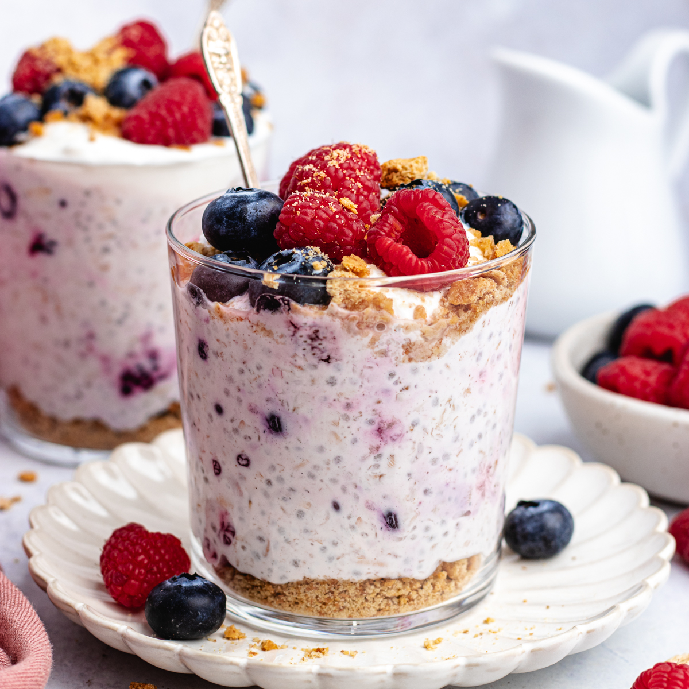

Berry Overnight Oats

The "Make-Ahead" Time Saver
Prep Time: 5 mins | Set Time: 6+ hours | Servings: 1
Ingredients:
- 1/2 cup rolled oats (not instant)
- 1/2 cup milk of choice
- 1/4 cup Greek yogurt
- 1 tbsp maple syrup
- 1/2 cup frozen mixed berries
Step by Step:
- Mix: Combine oats, milk, yogurt, and syrup in a mason jar.
- Wet Mix: In a separate bowl, whisk buttermilk, eggs, and butter.
- Combine: Pour wet into dry. Stir until just combined (lumps are okay!).
- Fry: Pour 1/4 cup batter onto a hot, greased griddle. Flip when bubbles appear on the surface.